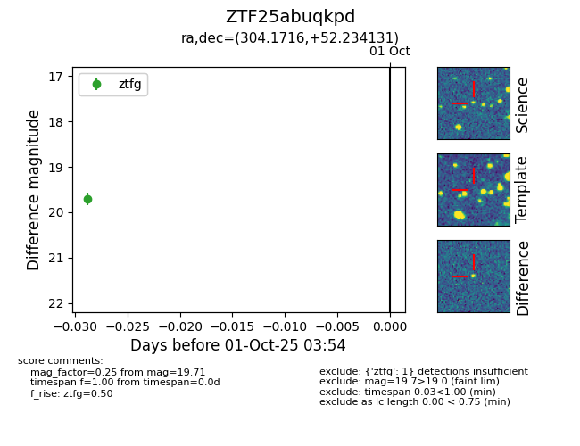

FINK: ZTF25abuqkpd
Lasair: ZTF25abuqkpd
ALeRCE: ZTF25abuqkpd
ZTF25abuqkpd (ztf,fink)
equatorial (ra, dec) = (304.1716,+52.23413)
galactic (l, b) = (87.6060,+9.34407)

last ztfg=19.71
1 ztfg detections